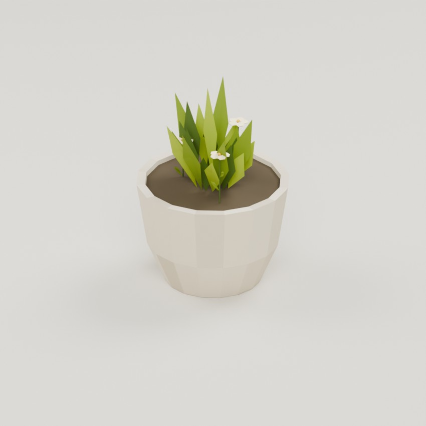
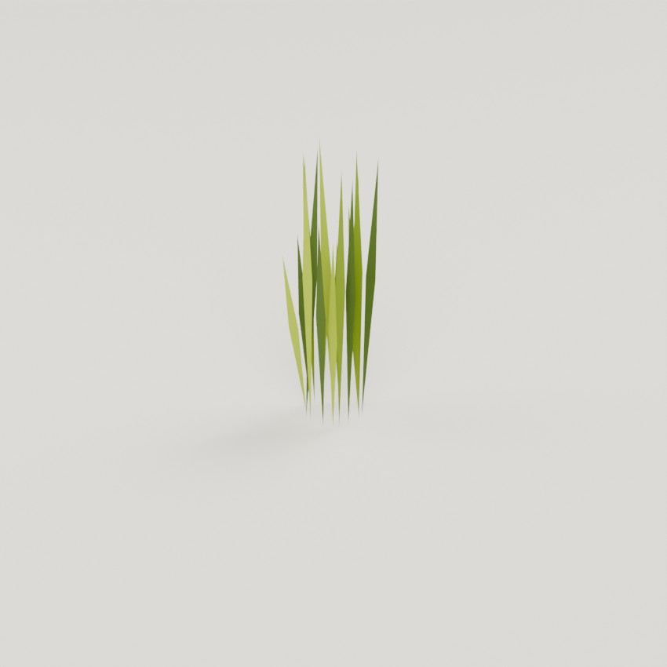
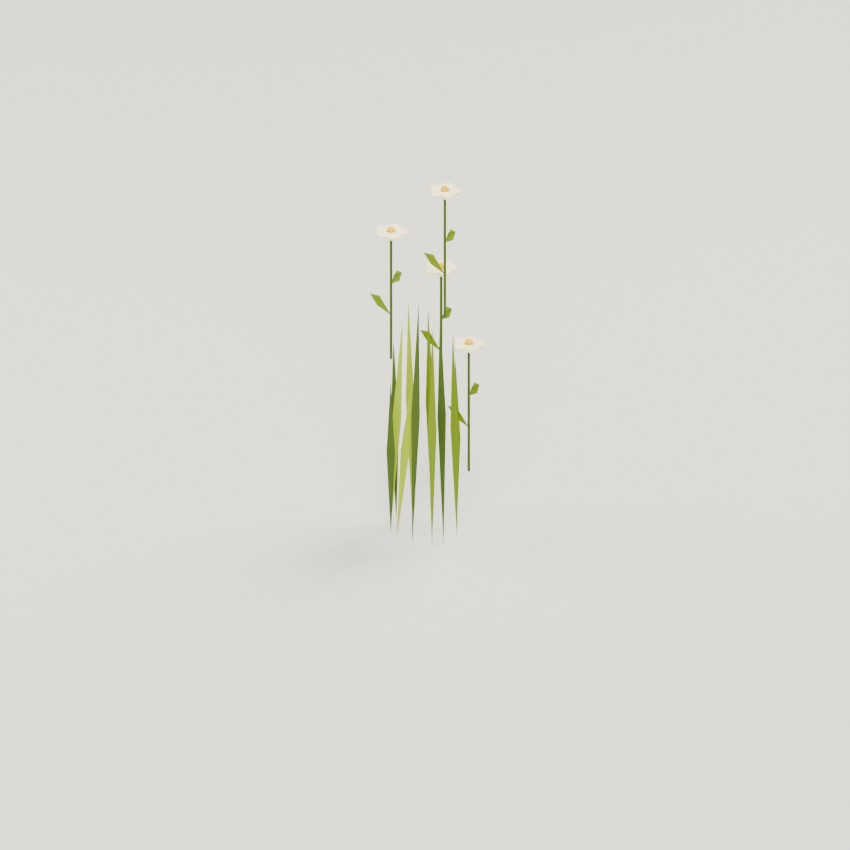
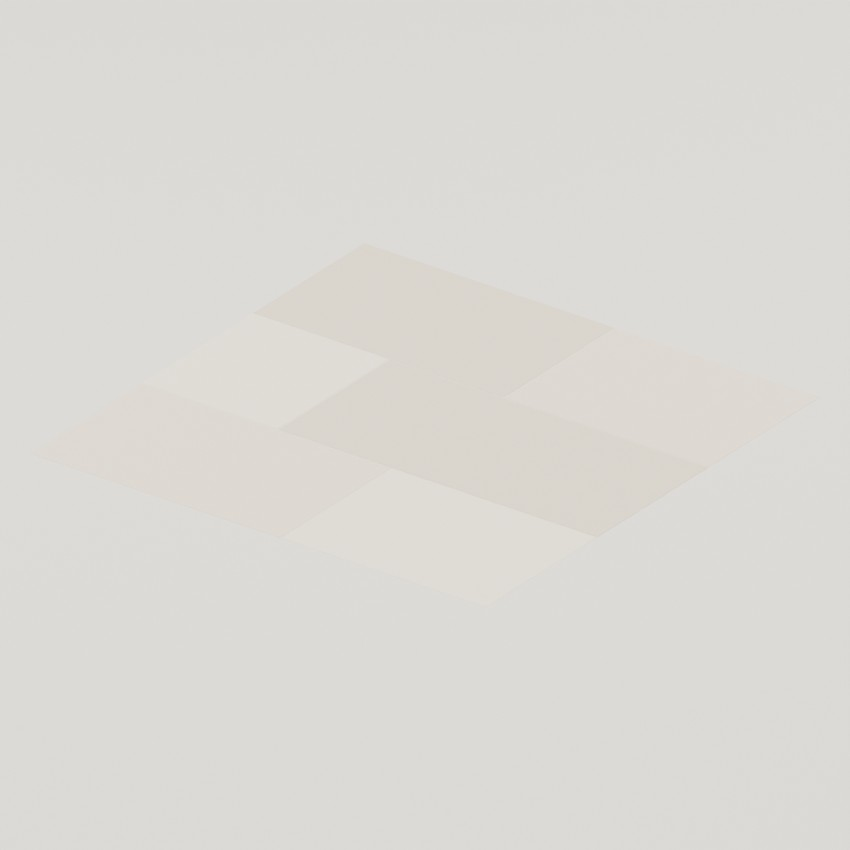
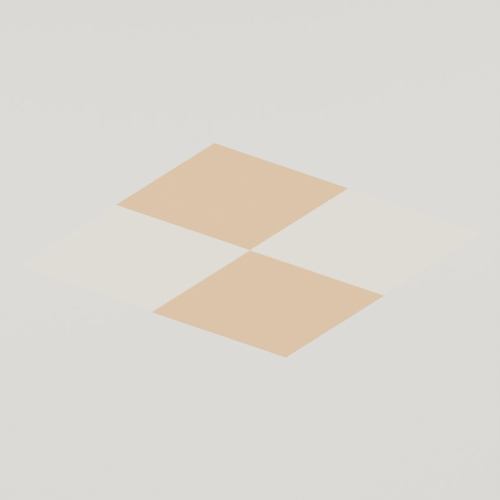

Planter Pot
756 triangles · 74 KB · New export

Meadow Grass
64 triangles · 8 KB · New export

Meadow Flowers
640 triangles · 69 KB · New export
Paving Tile A
188 triangles · 17 KB · New export

Paving Tile B
276 triangles · 24 KB · New export

Paving Tile C
188 triangles · 17 KB · New export
Path
72 triangles · 8 KB · New export
Street Tile
188 triangles · 17 KB · New export
Street Kerb
44 triangles · 5 KB · New export
Tram Track
336 triangles · 29 KB · New export
Water Tile
212 triangles · 28 KB · New export
Bollard
140 triangles · 11 KB · Carried forward
Cafe Table
2,264 triangles · 160 KB · Carried forward
Flowerbed
2,692 triangles · 272 KB · Carried forward
Fountain
4,132 triangles · 367 KB · Carried forward
Lamp Post
696 triangles · 59 KB · Carried forward
Palm A
2,610 triangles · 230 KB · Carried forward
Palm A Far
748 triangles · 76 KB · Carried forward
Palm B
2,610 triangles · 230 KB · Carried forward
Palm B Far
748 triangles · 76 KB · Carried forward
Palm C
2,610 triangles · 230 KB · Carried forward
Palm C Far
748 triangles · 76 KB · Carried forward
Planter Square
3,184 triangles · 339 KB · Carried forward
Railing
760 triangles · 64 KB · Carried forward
Railing Post
232 triangles · 20 KB · Carried forward
Seat Bench
1,060 triangles · 85 KB · Carried forward
Seat Cafe-Table
972 triangles · 78 KB · Carried forward
Seat Reading-Chair
1,100 triangles · 124 KB · Carried forward
Shrub Leafy
2,040 triangles · 215 KB · Carried forward
Shrub Round
1,880 triangles · 197 KB · Carried forward
Tram Shelter
3,128 triangles · 260 KB · Carried forward
Tree Banyan
6,476 triangles · 636 KB · Carried forward
Tree Round A
2,910 triangles · 306 KB · Carried forward
Tree Round A Far
470 triangles · 47 KB · Carried forward
Tree Round B
2,910 triangles · 306 KB · Carried forward
Tree Round B Far
470 triangles · 47 KB · Carried forward
Umbrella Yellow
2,368 triangles · 179 KB · Carried forward